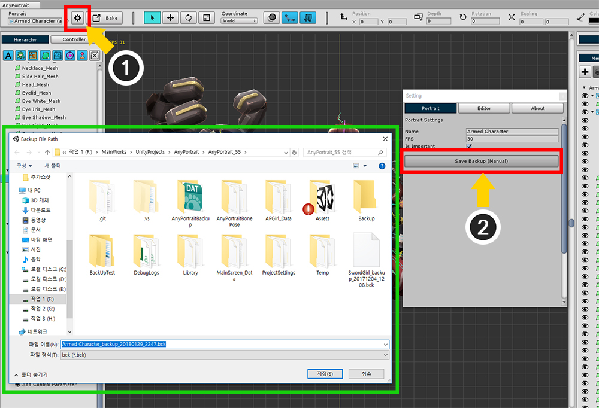
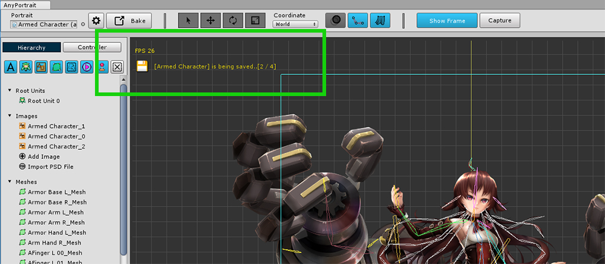
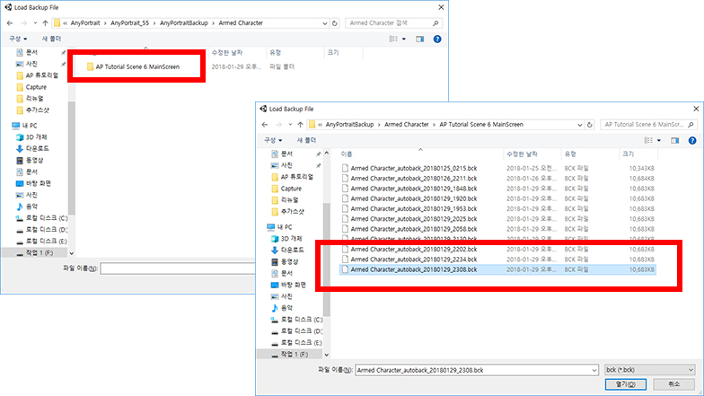

AnyPortrait > Manual > Backup
Backup
1.0.0
If the work done is damaged by an accident, you may want to return it to the previous working state.
This page explains how to save backup files manually or automatically, and open saved backup files.
Save backup manually

(1) Click the Settings button to open the Setting dialog box.
(2) Press the Save Backup (Manual) button on the Portrait tab and save the file.
Save backup automatically

By default, the backup file is automatically saved at a certain time while you work.
You can use the settings to decide whether to back up automatically or not, and specify the backup time and storage path.
(1) Click the Settings button to open the Setting dialog box.
(2) You can change the value of Auto Backup Setting in Editor tab.

If Auto Backup is turned on, it saves the backup file every set time.
The Auto Backup feature has the following features:
- You can continue working even when Auto Backup is started.
- If there are a lot of data to store, the editor may be a little slower.
- 10 backup files are created, and when the number of files becomes more than that, the oldest backup file is deleted.
- apPortrait, each sub-folder is created for each scene, it is easy to distinguish.
- It does not matter if you shut down AnyPortrait during automatic backup. However, Unity can stop for a while.
- The default backup folder path is "(Unity project folder) / AnyPortraitBackup".
Open backup


You can open the backup file to create apPortrait.
On the first screen of the AnyPortrait Editor, (1) click the Load Backup File button.
(2) Select the folder where the backup is saved and open the file.
If the file is saved automatically, there will be a folder named "(apPortrait name)/(scene name)".
You can find the backup file here.

When you open the backup file, you can see that apPortrait which is started with "Backup_" is newly created.
(The above screen is for explanation. When you open the backup file, it is ready to work by selecting apPortrait created immediately.)